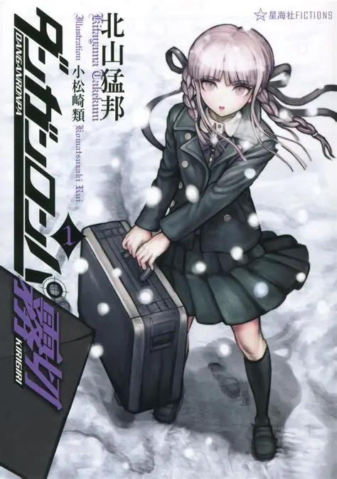

弹丸论破 雾切
ダンガンロンパ霧切 · 北山猛邦 · 全七卷
一个初中生和一个留级生住在一起，一起破案。初中生叫雾切响子，年纪小、话少、看人像看标本。 留级生是这本书的叙述者，她管初中生叫「雾切妹妹」，初中生管她叫「结姐姐大人」。 这是一个天才侦探还没长成大人之前的故事。
01作品档案
| 书名 | 弹丸论破 雾切（ダンガンロンパ霧切） |
|---|---|
| 作者 | 北山猛邦（著）、小松崎类（插画） |
| 原作 | 《弹丸论破》系列的前传小说，主角是雾切响子 |
| 卷数 | 全七卷：天狼星天文台杀人事件 / 侦探入城 / 密室十二宫 / 复杀离奇 / 生存喧嚣 / Shoot down the angel / 最后之敌 |
| 体量 | 七卷合计约七十六万字 |
| 本馆藏 | 网络翻译版（译者 Fragrance、SAYA 等），与文库本可能有细微差异 |
02两个侦探，一间屋子
这本书的开场不是案件，是一个人醒来发现自己动不了。
她右手的手腕上套着一只黑色手环，连着一条锁链。手环很结实，锁链一绷紧，手就抬不到脸上。 她不明白自己为什么在哭，也想不起来之前发生了什么。第一卷前半段，读者跟她一样被关在这间屋子里。
后面才开始交代人物关系：她是五月雨结，一个留级生侦探；另一个人是雾切响子，初中一年级， 侦探编号已经爬到一个别人一辈子摸不到的位置。两个人住在一起，一起接案子，一个负责跑腿说话， 一个负责把真相说出来。
北山猛邦没有把雾切写成天生的怪物。他写她小、冷、不会说软话，也写她会被人骗、会被人锁起来。 这套书真正好看的地方，是读者看着她一寸一寸长起来的那个过程。
03登场人物
- 雾切响子——本书另一位主角。初中生，天才侦探。话很少，眼神冷，别人夸她她也不笑。系列走到第七卷时，她的侦探编号是「912」。
- 五月雨结——第一人称叙述者，留级生侦探，编号从「888」慢慢升到「885」。她管雾切叫「雾切妹妹」，雾切叫她「结姐姐大人」。
- 侦探图书馆——收藏六万五千五百多名侦探情报的地方，用 DSC 分类法把每个侦探排上书架。系列的关键舞台之一。
- 犯罪受害者救济委员会——系列里反复出现的组织，第一卷「黑之挑战」与第五卷「生存喧嚣」都和它有关。
- 黑之挑战——第一卷的机制：有人向侦探发起挑战，被点名的人要在限定条件下解开谜题活下来。
- 雾切仁——雾切的父亲，希望之峰学园的校长。这套前传里他始终在背景里，没有真正离场。
04七卷目次
| 第一卷 | 天狼星天文台杀人事件 + 黑之挑战（七章，两条线交错推进）+ 日常篇 |
|---|---|
| 第二卷 | 侦探入城（castling）——诺曼兹酒店、侦探的黑色死亡、侦探与杀人魔、侦探的奏鸣曲、献给侦探的供物、侦探穿越迷雾、失乐 |
| 第三卷 | 密室十二宫——少年与伯爵、来历不明、密室十二宫、门后的亡灵、非日常篇 |
| 第四卷 | 复杀离奇——日常篇开场，围绕连环杀人展开 |
| 第五卷 | 生存喧嚣——利布拉女子学院，犯罪受害者救济委员会的线继续 |
| 第六卷 | Shoot down the angel / Demonic virtuoso / farewell, my sweetheart / Life is what you make it |
| 第七卷 | 最后之敌——二月底，侦探图书馆，故事收束 |
七卷下来，案件的类型一直在换：密室、连续杀人、暴风雪山庄式的酒店、学院里的生存游戏。 变的是案子，不变的是两个人一起破案这件事。
05侦探图书馆与 DSC
这套书里最有意思的设定不是案件，是一套编号。
DSC 是「Detective Shelf Classification」，用三位数字给侦探分类：前两位是擅长的领域， 最后一位是等级。等级从 9 开始，数字越小越厉害——也就是说，编号「912」的雾切， 在这个体系里已经是代表世界的水准，而那时候她才初一。
五月雨结的编号从「888」升到「885」，只动了三位数字的最后一位，书里却写得很郑重： 她请工作人员帮她更新等级卡片。这个细节把「侦探」写成了一种需要被行业承认的职业， 而不只是小说里的一类主角。
侦探图书馆收着六万多名侦探的档案，按这套分类法排上书架，方便求助的人找到合适的侦探。 系列最后把舞台放回这里，是有用意的。
06真相与诡计
⚠ 点开查看剧透：这套书的手法与主线
一、把「侦探」当职业写。北山猛邦给的是一套行业规则：编号、等级、档案、委托。 案件之外，读者还会关心这两个人的职业处境——谁被行业承认，谁被当成孩子。
二、本格谜题为主。密室、连续杀人、时间与空间的错位，案件结构基本按本格规矩来。 第一卷用两条线交错，把「被关起来的人」和「在外面查案的人」同时推着走。
三、系列的主线是两个人。雾切一开始不会跟人相处，五月雨结在这个过程里既是搭档也是保护者。 系列走到最后，读者会发现真正被解开的是这两个人之间那层关系，而不是某一具尸体。
四、前传的位置。这套书写在《弹丸论破》正传之前，雾切还是初中生，希望之峰学园还在。 读正传时那些只能靠台词推测的旧事，这里是一件一件摆出来的。
（各卷具体谜底不在此展开，留给自己翻书。）
07名场面与评价
开场那只手环。「我的右手够不到自己的脸。」一句就把人按在椅子上，读者跟叙述者一起被锁住。
等级卡片。五月雨把等级从 888 更新到 885，高兴得像小孩。雾切在一边冷冷地说「嘘，图书馆内请保持肃静」。 两个人的关系全在这两句里。
「结姐姐大人」。雾切叫出这个称呼的时候，那个冷面的天才才露出一点孩子的样子。
评价：这是给《弹丸论破》读者的补课，也是独立成立的推理系列。案件质量在平均线以上， 真正撑住七卷的是人物——一个太小的天才，和一个愿意等她长大的人。
08参考资料
- 北山猛邦《弹丸论破 雾切》全七卷（网络翻译版，译者 Fragrance、SAYA 等，图源 @名侦探破猪）。
- 游戏《弹丸论破：希望的学园与绝望的高中生》——雾切响子在本传中登场。
- 《弹丸论破 Zero》——同一世界观的前传，讲述希望之峰学园「最恶事件」。
- 本页所有设定与章节名均取自主人提供的文本，未作虚构补充。